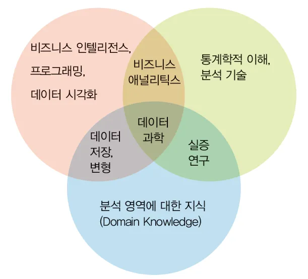
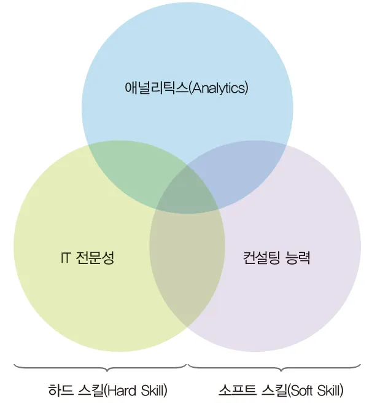
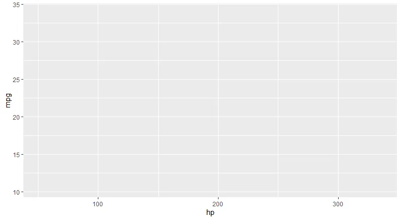
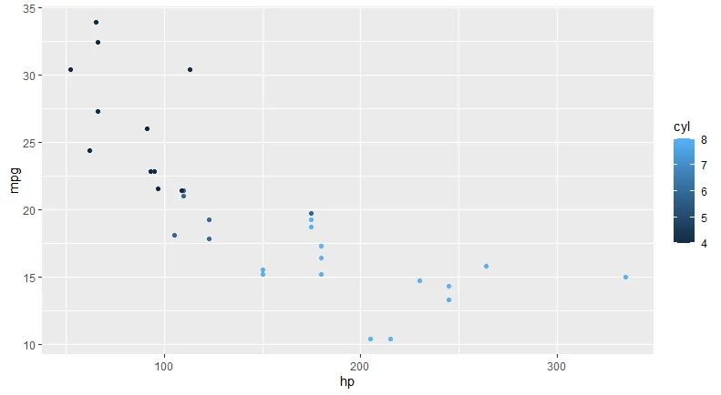
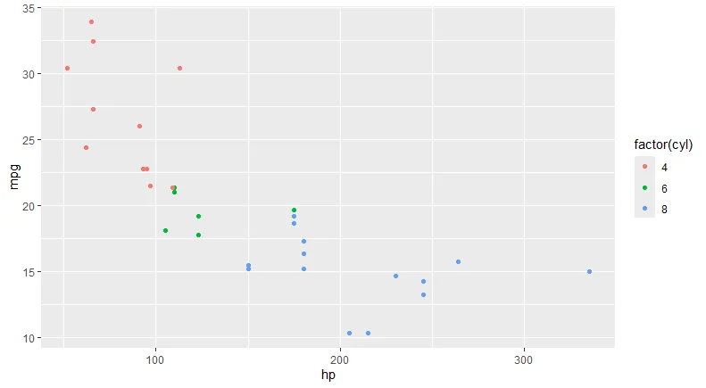

데이터과학개론 요약
1. 데이터와 데이터과학
1.1. 데이터의 개념과 속성
1.1.1. 데이터의 기초 개념
-
데이터의 정의
- data: 질적 혹은 양적 변수들의 가치집합으로서 정보의 조합
- 어원: datum의 복수형으로 give를 의미하는 라틴어 동사 dare에서 비롯
-
데이터, 정보 및 지식
- 데이터는 의사결정에 적합한 정보 추출의 원천
- 정보는 자료를 당면 문제 해결을 위해 체계적으로 정리한 것
- 지식은 경험적 측면이 강조: 정보의 관계성까지 고려
- 데이터는 정보나 지식을 뒷받침하는 재료
1.1.2. 데이터의 유형
-
정형 데이터와 비정형 데이터
- 데이터의 팽창: 계량 데이터 외에 시청각을 통해 인지할 수 있는 대상도 데이터로 볼 수 있음.
- 정형 데이터: 속성파악, 수집, 가공 용이하며 기존 도구로 분석 가능
- 비정형 데이터: 다양한 형태로 수집, 가공, 정제가 많은 노력 요구
- 반정형 데이터: 정형, 비정형 특성 혼재
-
정형 데이터의 구분
- 데이터는 실증연구의 재료
- 범주형 데이터
- 명목형 데이터: 순서없이 특성을 지닌 데이터 (예: 우편번호, 인종, 교과목 등)
- 순서형 데이터: 정교한 계량화는 어려우나, 순서 지정 가능 (예: 학력 데이터, 리커트 척도 등 인접범주간 간격 불균형)
- 수치형 데이터
- 연속형 데이터: 측정 기준이 연속적 (예: 길이, 무게, 부피, 온도 등)
- 이산형 데이터: 측정 기준이 불연속적 (예: 주차가능대 수, 신입생 수 등)
- 범주형 데이터
- 데이터는 실증연구의 재료
1.1.3. 데이터의 구조
-
데이터의 기본구조
- R에서의 데이터 구조: R등 통계패키지에서 활용되는 데이터 형태로 벡터, 행렬, 배열, 리스트, 데이터프레임 등
-
벡터
- 한 개 이상의 원소로 구성된 자료구조로 가장 기본이 되는 자료 객체를 의미
- 백터 원소는 수치, 문자, 논리형 중 한가지 형태로만 가능
-
행렬
- 동일한 형태로 구성된 2차원 데이터 구조로, 벡터의 확장이란 측면에서 벡터의 속성 보유
- 각 원소들은 수치, 문자, 논리 등의 형태를 가짐.
-
배열
- 행렬을 2차원 이상으로 확장시킨 객체
- 행렬 1과 2가 존재한다고 할때 이들이 배열의 요소로 병합되어 있다면 벼열의 첫번째 요소는 행렬1이 되고 두번째 요소는 행렬2가 됨.
-
리스트
- 서로 다른 형태의 데이터로 구성된 객체
- 리스트를 구성하는 성분은 서로 다른 형태의 원소를 가질 수 있고, 길이도 다를 수 있음.
-
데이터프레임
- 데이터 프레임은 형태가 일반화된 행렬
- 데이터 프레임이라는 하나의 데이터 객체에 여러 종류의 자료가 들어갈 수 있음.
- 데이터 프레임의 각 열은 각각 변수와 대응
- 분석이나 모형설정에 적합한 객체
- R에서 정의되는 데이터 프레임은 행렬과 비슷한 형태로 되어있으나 행렬은 차원으로 표시되며 같은 형태의 객체를 가지며 데이터 프레임은 각 열들이 서로 다른 형태의 객체를 가질 수 있음.
1.2. 데이터 과학
1.2.1. 데이터 과학의 기초개념
-
데이터 과학의 이해
- 데이터 과학: 체계적인 데이터 축적, 과학적 분석틀 설계, 분석결과 정확한 표현 및 해설
- 데이터 과학에 대한 견해: 컴퓨터 과학 + 통계학
-
데이터 과학의 접근방식
- 경험적 접근: 관찰, 측정, 데이터 수집 및 해석 + 경험적 일반화
-
데이터 과학의 목표
- 데이터 과학의 방법론적 관점: 경험적 조사를 원활하게 수행하기 위한 방법, 도구 및 접근 방식을 개발
1.2.2. 데이터 과학의 학문적 체계
De Veaux et al. (2016) 제안
-
관련 학과 교과목
- 수학: 미적분학 1 2 3, 선형대수학, 확률이론, 이산수학
- 컴퓨터 과학: 컴퓨터과학 개론, 데이터구조 및 알고리즘, 컴퓨터 시스템 및 구조, 고급 알고리즘, DB, 소프트웨어공학
- 통계학: 통계학 개론, 통계모형 및 회귀모형, 머신러닝 및 데이터마이닝, 통계이론
-
기타 소양 관련 교과목
- 전문분야 훈련: 연계 분야 실무 개론 과정, 연계 분야 실무 중급 과정, 데이터 관련 프로젝트로 이루어진 캡스톤 교과목
- 글쓰기와 말하기: 기술적 글쓰기 등 2과목, 대중 연설
- 윤리학: 관련분야의 윤리학
1.2.3. 데이터 과학자
-
개요
- 정의: 데이터의 수집과 저장에 관한 이해를 바탕으로, 이를 가공하고 처리하는 기술적인 지식을 가지고, 분석과정에서 주도적인 역할을 하면서 과학적 의사결정에 이르게 하는 전문가
- 요건: 데이터에 대한 이해력, 분석 능력 뿐만 아니라 분석 결과의 해석 및 통찰력까지 지닌 전문가
-
등장배경
구분 과거의 데이터 빅데이터 데이터의 원천 내부 외부 혹은 소셜 데이터의 형태 구조적 비구조적 데이터 수집 데이터웨어하우스내의 수집: 정적 데이터 실시간 생성 데이터 분석 절차 및 활용 데스크 위에서 테이블, 그래프 등 분석결과 정리 후 의사결정에 활용 현장의 역동적인 데이터 시각화 및 분석결과를 의사결정에 직접 활용 분석 환경 중앙처리 서버 분산 또는 병렬 처리 -
필요역량
-
Ayankoya et al. (2014)의 제안: 경영활동에서 의사결정이 미치는 데이터과학의 중요성 강조

-
분석도구 측면의 활용 능력: IT분야를 주로 하드 스킬로, 비즈니스 컨설팅이나 전문실험 또는 조사 관련 분석 컨설팅 등의 분야를 소프트 스킬로 분류

-
-
데이터 주도권
-
데이터 특성을 이해하고, 분석의 프레임워크를 명확히 정의하는 가운데 분석 결과의 해석 및 활용까지 일련의 과정을 책임지는 태도
- 이해력
- 유연성
- 윤리의식
- 통찰력
- 인문학적 소양
2. 데이터의 관리와 분석
2.1. 데이터의 수집과 관리
2.1.1. 외부 데이터와 내부 데이터
- 외부데이터: 일반에게 공개된 데이터(예: 통계DB, 공개API)
- 통계청 KOSIS, 한국은행 ECOS 등
- Application Programming Interface
- 내부데이터: 데이터 수집 주체의 목적에 따라 DB에 축적되어 내부 의사결정 등에 사용
- 업무과정 중 생성 등
2.1.2. 데이터의 수집
-
데이터 수집과 분석기회
- 목적: 기업경영 및 비즈니스와 관련된 문제의 경우 의사결정에 이르는데 도움이 될 만한 데이터 분석과정이 필수적
- 빅데이터 환경에서의 데이터 수집 방법: 검색 데이터, SNS, 웹문서, 공공 데이터 등을 수집하여 이용
-
검색데이터의 의미와 수집
- 네이버 데이터랩의 경우 시간의 흐름에 따른 검색어 조회 수의 추이를 찾아볼 수 있는 서비스 제공하며, 수많은 소비자 또는 고객의 관심과 성향이 반영되었기 때문에 높은 가치
- Google 검색어 트랜드에서는 검색 추이를 다양한 형태로 시각화 할 수 있도록 구성
-
SNS 데이터 수집
- API 방식을 통해 자료 수집 가능
- 개인의 성향을 어느정도 노출하면서 자료가 축적되므로 많은 정보를 내포
-
웹문서 데이터 수집
- 최대한 웹문서의 구조를 잘 지키는 동시에 최적화크롤링 & 인덱싱 측면를 통해 적절한 검색이 이루어지도록 작성
- 웹스크래핑: 브라우저 표시 내용 중 사용자가 지정하거나 필요한 정보만을 추출하여 가공하고 저장하여 사용자에게 제공하는 기술
- 웹크롤링: 특정 형태의 정보를 웹에서 자동으로 수집해 정보를 최신으로 유지하는 소프트웨어 기술
- 웹문서 데이터 수집을 위해서는 구조 파악 필요
-
공공데이터 수집
- 법령 등에서 정하는 목적을 위하여 생성 또는 취득하여 관리하고 있는 데이터
- 공공데이터포털
- 서울 열린데이터광장
2.1.3. 데이터베이스
-
의미와 특징
- 정의: 다수가 공유하여 이용하기 위해 통합 관리되는 정보의 집합으로, 한 개 이상의 자료가 논리적으로 연결되어 축적되며, 이 축적과정에서 적절한 조직화 구조화를 통홰 자료의 중복을 피하고 효과적 접근이 가능하도록 자료를 구성하므로써 효율성 제고
- 특징
특징 내용 통합된 데이터 데이터의 특성, 실체간의 형식관계의 개념적인 구조화 데이터의 연관성 복수의 적용업무들에 제공하는 관련있는 데이터의 집합 데이터 중복의 최소화 데이터 내용이 중복되지 않으면서 접근방식 및 검색과 갱신의 효율성 확보 보조기업장치 활용 보조기업장치 활용으로 효율성 제고 동시공유 여러 사람이 데이터에 동시 접근하여 자료 공유 최선의 데이터 유지 최신의 데이터로 갱신에 용이 일관성, 무결성 데이터의 일관성과 정확성 유지 보안성 접근을 효율적으로 통제, 관리하여 보안을 유지 - 단점
- DBA에 대한 지식을 갖춘 전문가 필요
- 전산화 및 관리에 소요되는 비용이 큼.
- 대용량 디스크로의 접근이 집중되면 과부하가 발생될 우려
- 데이터 백업과 복구가 어렵고 시스템이 복잡
-
데이터베이스 모델
- DB 설계과정에서 데이터의 구조를 표현하기 위해 사용되는 도구
- 데이터 모델의 구성요소로서는 데이터 구조, 연산, 제약조건 등
- 계층형 모델, 네트워크 모델, 관계형 모델 등
-
DBMS
- 의미: 기존 파일 시스템의 데이터 중복문제를 해결하기 위해 제안되었으며 응용프로그램들을 통해 DB를 공유할 수 있도록 관리
- 기능
- 정의: 응용프로그램에서 요구하는 데이터구조를 지원하기 위해 데이터의 형식, 구조, 제약조건 명시
- 조직: 데이터 검색을 위한 질의, 갱신, 삽입, 삭제 등을 체계적으로 관리하기 위한 인터페이스 제공
- 제어: 무결성을 유지하도록 하고 H/W나 S/W 오동작으로부터 시스템을 보호하며, 권한 검사 및 처리결과가 정확하도록 병행제어 제공
- 장점
- 자료와의 관계성 정의로 자료통합이 증진
- 데이터 접근 뿐만 아니라 데이터 통제를 강화하여 오작동이나 보안도 용이
- 애플리케이션의 쉬운 개발 및 관리
- 데이터의 논리적 물리적 독립성 보장
2.2. 데이터의 분석
2.2.1. 데이터 분석의 의의
-
데이터 분석 도입 배경
- 기업들의 데이터 분석 중요성 인식: 데이터 분석을 통한 최적의 의사결정을 도모
- 데이터가 기업가치에 영향을 미칠 수 있음
-
데이터 분석 도입의 성공요소
-
분석 질문의 우선적 정의: 무엇을 분석할지 구체적이고 명확하게 정의 필요
-
선택과 집중
- 데이터 규모 증가 및 형태의 복잡성 증가할 수록 중요 문제로 부각
- 핵심 분석 과정이 빠른 시간내에 원활히 완료 필요
- 기업 경쟁력 강화 및 향후 유사 업무 프로세스 적용 용이
-
자동화된 분석업무 프로세스 내제화: 시간 절약 및 분석과 의사결정의 연계성 강화 및 통찰력 획득
-
2.2.2. 분석 핵심문제의 발견
-
분석 기획
- 기초 재료를 가지고 얼마나 믿을 수 있고 실현가능한, 성공적인 성과물을 만들 수 있는지 청사진을 제시하고 도면을 설계하는 과정
- 다양한 업무 유형과 다량의 데이터, 복잡한 경영의 문제가 얽혀있을 때, 분석 대상을 얼마나 효과적으로 찾아내고 적시에 분석하는 가가 성패를 좌우
-
접근 방법
- 분석 핵심문제를 찾는 일련의 과정을 분석기회의 발견이라고 함.
- 하향식, 상향식, 분석대상 풀로부터 벤치마킹 접근방식이 있음.
- 분석 핵심문제의 세 가지 발굴 방법
- 전사적 경영모델: 전사 분석 체계 구현
- 주제별 분석기회 구현: 특정 업무 및 주제별 분석기획 발견
- 벤치마킹 풀(산업/업무 서비스별 분석테마 툴): 분석기회 식별
- 분석 핵심문제를 찾는 일련의 과정을 분석기회의 발견이라고 함.
-
분석 기회의 정의
- 분석기회: 의사결정 대상업무를 정의하고 효과적으로 수행하기 위해 필요한 주요 사항들을 정리하고 찾는 방법
- 분석기회를 명확화하고 구체화하는 과정을 통해야만 적절한 분석에 이르게 되고 정확한 상황판단과 의사결정에 도움
-
구체적인 분석 질문의 작성
- 업무 담당자는 의사결정 단계에서 필요한 정보를 찾아내기 위해 질문을 던짐.
- 분석 질문을 얼마나 잘 만들었느냐에 따라 필요한 정보를 얻어내고 적절한 분석을 진행할 수 있음.
- 분석 질문 방식
- 연속 질문 방식
- 업무 요소별 질문 방식
2.2.3. 분석문제 탐색과정의 구조화 및 구체화
-
분석문제 탐색과정의 구조화
- 유저스토리: 분석자의 역할, 의사결정 사항, 분석을 통해 이룩하고자 하는 목표가치로 구현된 정보 집합
- 유저스토리의 작성은 분석문제 탐색과정을 구조화하기위해 유용함.
- 분석기회의 식별 => 담당자 역할의 정의 => 필요한 의사결정 능력 정의 => 추구하는 목표가치의 명확한 기술
-
목표가치의 구체화
- 목표가치를 측정 가능한 형태인 지표로 정의하는 과정이 필요한데 이를 목표의 지표화 및 구체화라 함.
‘고객의 만족도를 높인다’라는 목표의 경우 이를 구체화할 수 있는 고객만족 설문조사를 실시 이를 지속적으로 관리
- 목표가치를 측정 가능한 형태인 지표로 정의하는 과정이 필요한데 이를 목표의 지표화 및 구체화라 함.
-
데이터 분석 방안의 구체화
- 분석 대상들 간의 관계성을 모형화할 필요
- 분석 대상들 간의 상관관계를 평가하여 의사결정에 필요한 각각의 요소 간 관계를 구체적으로 조망 가능
3. 데이터의 품질과 표현
3.1. 데이터 품질관리
3.1.1. 데이터 품질관리의 의의
-
데이터 품질의 정의
- 품질관리 대부 배경: 과거 미국 주요기업들이 고객중심경영 환경 구축을 위해 CRM을 추진하였으나 고객정보데이터의 낮은 품질로 미비한 성과
- 데이터 품질의 정의: 적합성, 적시성, 정확성, 완전성, 적절성 및 접근가능성 등에서 업무를 효과적으로 수행하기 위한 데이터의 기대 수준
- 좋은 품질의 데이터: 적시성이 담보되는 가운데 업계 표준을 준수하고 완전하며 일관성있는 정확한 데이터
- 데이터 품질 향상의 기대효과
- 생산성 향상 및 저래 속도 증가로 비용 감소
- 거래 확대 및 좋은 협업자 발굴 기회가 제공되어 글로벌 데이터 공유의 토대
-
데이터 품질관리의 필요성
- 데이터 품질관리의 필요성
- 용역이나 서비스의 공급 측면에서 공급 체계의 효율성을 높이는 중요 요소
- 지속적 품질관리로 오류나 오차 감소 및 효율성 자체 증진
- 비용절감 => 고객만족 => 긍정적 기업성과
- 데이터 품질관리 미흡 사례
- 소매판매 분야 => 제품설명 및 가격 책정 오류 => 판매기회 손실, 고객 불만
- 유통분야 => 취급주의 및 규격 정보 누락 => 물품파손, 진열, 적재 문제
- 법 규제관련 분야 => 함유요소 누락 및 부정확한 측정 => 벌금, 제재
- 데이터 품질관리의 필요성
3.1.2. 데이터 품질관리 시스템
-
데이터 품질관리 시스템의 의의
- 신뢰할 수 있는 좋은 데이터가 생성되고 공급 체인 내에서 원활히 전달되고 유지될 수 있도록 하는 내부 프로세스
- 데이터 품질 프레임워크는 데이터 품질 개선을 위한 가이드 제공
- 중요한 프로세스 및 조직들이 데이터 품질을 개선하고 지속적으로 양질의 데이터 출력을 유지할 수 있는 환경 조성
-
데이터 품질관리의 12단계(GSI(2010))
- CEO의 의지 표명
- CDO 임명
- 데이터 품질인식 프로그램 런칭
- 숙련자 양성교육
- 품질관리 프로세스 수립
- 품질관리 시스템관련 규정(문서) 개발
- 품질관리 시스템관련 규정(문서) 리뷰 및 조정
- 품질관리 시스템의 실행 및 운영
- 내부 데이터 품질 감시(audit)
- 관리절차 리뷰
- 정합성 평가
- 지속적 개선노력
-
낮은 품질의 데이터 및 해결 방안
사럐 해결을 위한 노력 결측치나 속성이 알려지지 않은 데이터 결측지의 보완 문제 등에 주의 부정확하고 유효하지 않으며 일관성이 없는 데이터 잘못된 기록이나 정보로 활용되지 않도록 유의 왜곡되고 잘못된 인코딩에 의한 데이터 데이터 왜곡의 이유를 파악하고 이의 처리 방법 논의 잘못된 해석을 초래하는 데이터 데이터 설명을 충분히 숙지 오염된 데이터 데이터 클리닝 과정을 고려 중요성을 간과하고 있는 지나치게 많은 양의 데이터 중요성을 지나는 부분을 선별
3.1.3. 데이터 품질관리 사례
참조. 한국지능정보사회진흥원, “정부 3.0 및 창조경제를 위한 데이터 품질관리 사례찝”, 2013
-
관세청
- 현황: 관세청 데이터는 관세사, 화주, 선사 등 다양한 생성주체의 수출입관련 민원입력을 통해 직접 생성되고, 이에 낮은 품질의 부정확한 데이터 입력이 이슈
- 문제점: 낮은 품질의 기초 데이터는 무역통계 편제의 부정확성 초래 및 국가 경제정책 수립을 저해하고 관세행정의 대내외 신뢰도 저하
- 해결방안: 부정확안 데이터 입력 방지를 위한 소프트웨어 개발, 이용자 교육, 입력 데이터 사전 검증을 위한 참조 DB 구축 및 시범 적용으로 입력 통제 자동화
- 추진효과: 해외거래처 중복코드 정제로 거래처 정보 정확도 향상, 품명 검증 등을 통해 사전에 인지하지 못한 추가적 데이터 오류 발견
-
특허청
- 현황: 국내특허정보 및 데이터가 선진 5개국 특허청에 제공
- 추진필요성: 지식재산 정보관련 문제들을 미연에 방지하고, 국민에게 신뢰할 수 있는 지식재산 정보 서비스 제공을 위해 최적화된 데이터 품질관리 체계 구축 필요
- 추진효과: 전사적인 특허데이터에 대한 품질관리의 중시문화 및 의식 조성, 고품질 특허데이터를 확보하고 사전 오류 데이터 오류 방지 등
-
심평원
- 현황: 8만여 요양기관, 연간 13억건, 45조원에 달하는 방대한 규모의 다양한 연계기관의 데이터 처리중
- 추진필요성: 의료심사의 공정성과 전문성을 제고, 국민을 의학적 및 경제적 보호,의료서비스 전달과정의 전 영역에 연계되어 이해관계자간의 상충되는 의견을 합리적으로 조율하고 처리하는데 보건의료데이터의 연계 및 활용이 매우 중요한 과제로 부각
3.2. 데이터의 표현
3.2.1. 데이터 표현의 방법
-
프레젠테이션
- 프레젠테이션: 정보, 기획, 안건을 제시하고 설명하는 행위
- 내용의 명확성, 간결성, 흡인력 등을 바탕으로 체계화된 구성이 필요
- 시각화를 통한 정보전달이 중요
- 프레젠테이션: 정보, 기획, 안건을 제시하고 설명하는 행위
-
프레젠테이션 3요소
- 목적: 명확성
- 청중: 수준, 특성 고려
- 장소: 위치나 공간
-
프레젠테이션 환경의 변화
- 기술: IT, 컴퓨팅 기술의 진보
- 사람: 프레젠터의 확대로 선진화된 기법연구
- 데이터: 데이터 과학의 발전
3.2.2. 효과적인 표현 도구
-
데이터 프레젠테이션 도구
- 데이터 환경변화: 데이터를 어떻게 이용하여 의사결정에 도움이 되는 프레젠테이션을 하느냐가 중요문제로 부각
- 데이터 시각화: 그래픽을 이용해 명확하고 효과적으로 정보를 전달하고 교감하는 목적으로 도식적인 형태안에 목적하는 바를 추상적 정량적으로 표현
- 데이터 마이닝: 다량의 미가공 데이터로부터 소량의 중요 정보를 추출하는 과정
- 인포그래픽: 시각화와 다르게 원데이터를 드러내지 않고, 복잡한 데이터, 정보, 지식을 빠르고 명확하게 이해할 수 있도록 제작
-
데이터기반 프레젠테이션의 의의
- 데이터 시각화의 유의점: 프레젠테이션을 데이터 표현에만 국한시킬 경우 외향에 치우쳐 분석 목표의 이해 부족이나 잘못된 의사결정에 이룰 수 있음.
- Joanna Schloss, Why Great Data Visualization(Alone) Does Not Equal Great Insight, Direct2Dell
- 데이터 기반 프레젠테이션: 시각화 도구를 사용하는 동시에 데이터의 구조와 의미를 충분히 이해하고 분석의 배경지식을 지닌 상태에서 이루어지는 프레젠테이션을 의미
- 데이터 시각화의 유의점: 프레젠테이션을 데이터 표현에만 국한시킬 경우 외향에 치우쳐 분석 목표의 이해 부족이나 잘못된 의사결정에 이룰 수 있음.
4. 데이터과학의 도구
4.1. 빅데이터의 분석도구
4.1.1. 빅데이터의 개념과 분석 절차
- 3V
Gartner가 뽑은 빅데이터의 특징을 나타내는 핵심 주제어
- Volume(양), Velocity(속도), Variety(다양함)
- 4V 또는 5V: Value(가치) 또는 Veracity(정합성) 추가
4.1.2. 빅데이터의 분석
- 빅데이터 분석의 특징
- 모집단으로부터 추출된 표본에 근거하여 추론을 실시하는 전통적 모수적 모형 접근 방법으로는 분석 한계
- 복잡한 구조의 데이터를 단순화하고 데이터가 의미하는 바를 체계적으로 정리하여 일목요연하게 표현
- 빅데이터 분석 절차
- 데이터 마이닝: 모수적 접근법, 알고리즘 접근법
- 데이터 시각화: 시간, 분표, 관계, 비교, 공간
4.2. 프로그래밍 언어
4.2.1. 프로그래밍의 의의
- 프로그래밍: 컴퓨터에 명령을 전달하여 과업을 수행하도록 하는 절차
- 프로그래밍 절차: 문제정의 => 입출력설계 => 순서도 작성 => 코딩 => 에러수정
- 데이터과학자는 다양한 도구와 과학적 접근법을 동원하여 데이터의 특성을 파악하고 분석하는 한편, 합리적인 의사결정을 돕는 총괄적인 역할을 담당
4.2.2. 빅데이터 시대의 프로그래밍 언어
활용도 높은 언어들Anaconda 조사 기준 : Python, SQL, R, JavaScript 순
-
Python 개요
- 구문이나 문법이 자연어에 가깝게 만들어져 직관적 이해 용이
- 함수, (패키지), 모듈, 라이브러리의 위계
- 온라인 노트북 사용 환경 제공: Google Colab
- Interpreter vs Compile: Python은 Interpreter 방식
- Object Oriented Language: Class, Object, Method 요소를 지닌 프로그래밍 언어
-
R 개요
- 오픈소스로 통계적 분석도구로 주목
- R의 패키지는 함수와 매뉴얼, 데이터 등을 표현한 패키지 등을 통해 많은 통계적 함수를 제공
4.2.3. 소스 코드의 관리와 공유
-
Github 등록하기
- Git: 소스코드 관리를 위해 분산 버전 관리 시스템
- Github: Git에서 다룬 소스들을 공유할 수 있는 웹공간으로 개발 및 협업이 용이하도록 지원
-
Github 주요개념
- commit: 파일을 추가하거나 변경하여 저장하는 작업
- push: 파일을 추가하거나 변경하여 원격저장소에 업로드 하는 작업
- branch: 버전관리를 위한 (가지) 구조 생성
-
Github 사용하기
- git init
- 파일 생성, 수정, 편집
- git add
- git commit
- git push
-
Git Bash
- 초기이용자설정: git –global user.email “aaa@aaa.com”; git –global user.name “name”
- 초기설정: git init
- Github 연결: git remote add origin https:github.com/계정명/aaa.git
- commit: git commit -m “작업 메시지”
- 원격저장소에 올리기: git push origin main브랜치명 ‘메시지’
-
branch의 활용
- 브랜치 생성: git branch 브랜치이름
- 생성된 브랜치로 이동: git checkout 브랜치이름
- 브랜치 삭제: git branch -d 브랜치이름
- 원격저장소의 브랜치 삭제: git push origin –delete 브랜치이름
5. R데이터 편집
5.1. 기본적 데이터 구조
5.1.1. R의 설치
- 기본패키지인 base 설치 후 추가 패키지 설치로 기능 확장
- The Comprehensive R Archive Network
5.1.2. R의 전통적 데이터 구조
-
백터의 생성 및 편집
> vec1 <- c(1,2,3) # concatenation(연결), combine(합) > vec2 <- c("A","B","C") > vec3 <- c(T,F,T) > vec4 <- c(vec1,vec2) > vec5 <- c(vec1, vec3) > vec6 <- c(vec1,vec2,vec3) > mode(vec1); mode(vec2); mode(vec3); mode(vec4); mode(vec5); mode(vec6); [1] "numeric" [1] "character" [1] "logical" [1] "character" [1] "numeric" [1] "character" > vec5 [1] 1 2 3 1 0 1 > rep(2,3) # replicate(반복) [1] 2 2 2 > rep(c(4,5,6), times=2) [1] 4 5 6 4 5 6 > rep(c(4,5,6), times=c(2,1,2)) [1] 4 4 5 6 6 > rep(c(4,5,6), each=2) [1] 4 4 5 5 6 6 > seq(from=7, to=10, by=2) # 수열(sequence), : 연산자 사용 가능 [1] 7 9 > seq(3,-3,-2) [1] 3 1 -1 -3 > 3:-3 [1] 3 2 1 0 -1 -2 -3 > vec7 <- c(7,9,8) > vec7 <- append(vec7, 10, after=3) # append(대상, 값, 위치) > vec7 [1] 7 9 8 10 > sort(vec7) # 원소를 정렬해서 보여기주만 할 뿐 저장과정은 없음. [1] 7 8 9 10 > vec7 <- sort(vec7) # 원소를 정렬해서 vec7에 저장 > vec7[c(1, 4)] # c는 여러 원소를 묶어주는 역할. vec7[1,4]는 오류 발생 [1] 7 10 > vec7[5] <-100 # 5번째에 100 입력 > vec7 [1] 7 8 9 10 100 -
행렬의 생성 및 편집
> ml <- matrix(3:8, nrow=2) # 3~8까지 이용 행개수2 행렬 생성 > ml [,1] [,2] [,3] [1,] 3 5 7 # R은 포트란 기반 언어로 행렬데이터 메모리 저장시 열(column)우선 [2,] 4 6 8 # byrow=TRUE 옵션으로 행 기준 가능 > ml <- matrix(3:8, nrow=2, ncol=2) # 3~8까지 이용 행개수2 열개수2 행렬 생성 경고메시지(들): matrix(3:8, nrow = 2, ncol = 2)에서: data length differs from size of matrix: [6 != 2 x 2] > ml [,1] [,2] [1,] 3 5 [2,] 4 6 > c1 <- c(4,3,2,1) > c2 <- c(5,6,7,8) > cbind(c1,c2) # 열방향으로 묶기 c1 c2 [1,] 4 5 [2,] 3 6 [3,] 2 7 [4,] 1 8 > rbind(c1,c2) # 행방향으로 묶기 [,1] [,2] [,3] [,4] c1 4 3 2 1 c2 5 6 7 8 > dim(c1) <- c(2,2) # dimension 행렬 개수 지정 행렬생성 > c1 [,1] [,2] [1,] 4 2 [2,] 3 1 > m1 <- matrix(8:1, ncol=4) # 8~1 열개수4 > m1[2,m1[1,]>5] # m1에서 1행 값이 5보다 큰 열들을 고르고, 그 열들의 2행 원소 [1] 7 5 > m2 <- m1[c(1:2),c(1:2)] # m1의 1~2행과 1~2열 선택 > m2 [,1] [,2] [1,] 8 6 [2,] 7 5 > m2%*%m2 # 행렬의 곱 [,1] [,2] [1,] 106 78 [2,] 91 67 > solve(m2) # 역행렬 [,1] [,2] [1,] -2.5 3 [2,] 3.5 -4 > m2 %*% solve(m2) # 역행렬의 정의 [,1] [,2] [1,] 1 0 [2,] 0 1 > apply(m1, 1, mean) # 1, mean 은 각 행의 평균계산 [1] 5 4 > apply(m1, 2, mean) # 2, mean 은 각 열의 평균계산 [1] 7.5 5.5 3.5 1.5 -
배열의 생성 및 편집
> a1 <- array(1:3) # 배열 구성 > mode(a1) [1] "numeric" > class(a1) # 데이터 구조 표시 [1] "array" > a2 <- array(11:20, dim=c(2,2,2)) # dim으로 각 차원의 원소 수 지정 > a2 , , 1 [,1] [,2] [1,] 11 13 [2,] 12 14 , , 2 [,1] [,2] [1,] 15 17 [2,] 16 18 > a2 %*% a2 # 배열에서는 %*% 불가 [,1] [1,] 1724 > a2[,,1] %*% a2[,,2] # 각 행렬로 구분하여 적용 [,1] [,2] [1,] 373 421 [2,] 404 456 -
리스트의 생성 및 편집
> l1 <- list(first=1:4, "LIST", c(T,T,F)) > l1 $first [1] 1 2 3 4 [[2]] [1] "LIST" [[3]] [1] TRUE TRUE FALSE > l1$first[3] [1] 3 > l1[[3]][-2] # -2는 두번째 원소 제외 [1] TRUE FALSE -
데이터 프레임의 생성
> m1 <- matrix(8:1, ncol=4) > d1 <- as.data.frame(m1) > d1 V1 V2 V3 V4 1 8 6 4 2 2 7 5 3 1 > var1 <- c("A", "B") > var2 <- c(T, F) > d2 <- cbind(d1,var1,var2) > d2 V1 V2 V3 V4 var1 var2 1 8 6 4 2 A TRUE 2 7 5 3 1 B FALSE
5.2. 새로운 개념의 데이터 구조
5.2.1. tidyverse 환경
- tidyverse는 데이터과학을 위해 설계된 패키지 조합
- 홈페이지 tidyverse
- R에서 접근: install.packages(“tidyverse”)
- 설치확인: library(tidyverse)
tidyverse 주요 패키지 내용 tibble an improved data frame ggplot2 data visualization tidyr tidy 자료 다루기 readr 자료 불러오기, csv같은 직사각형 데이터 처리에 유용 purrr 함수형 프로그래밍 도구 dplyr data frame 편집 stringr 문자열 편집 forcats factor 편집
### tidyverse 패키지 설치(RStudio에서 진행) ###
> install.packages("tidyverse")
WARNING: Rtools is required to build R packages but is not currently installed. Please download and install the appropriate version of Rtools before proceeding:
https://cran.rstudio.com/bin/windows/Rtools/
‘C:/Users/deokh/AppData/Local/R/win-library/4.5’의 위치에 패키지(들)을 설치합니다.
(왜냐하면 ‘lib’가 지정되지 않았기 때문입니다)
URL 'https://cran.rstudio.com/bin/windows/contrib/4.5/tidyverse_2.0.0.zip'을 시도합니다
Content type 'application/zip' length 431650 bytes (421 KB)
downloaded 421 KB
패키지 ‘tidyverse’를 성공적으로 압축해제하였고 MD5 sums 이 확인되었습니다
다운로드된 바이너리 패키지들은 다음의 위치에 있습니다
C:\Users\deokh\AppData\Local\Temp\RtmpWiDq6u\downloaded_packages
>
> library(tidyverse)
── Attaching core tidyverse packages ──
✔ dplyr 1.1.4 ✔ readr 2.1.5
✔ forcats 1.0.1 ✔ stringr 1.6.0
✔ ggplot2 4.0.0 ✔ tibble 3.3.0
✔ lubridate 1.9.4 ✔ tidyr 1.3.1
✔ purrr 1.1.0
── Conflicts ──────────────────────────
✖ dplyr::filter() masks stats::filter()
✖ dplyr::lag() masks stats::lag()
ℹ Use the conflicted package to force all conflicts to become errors
5.2.2. tibble의 개념 및 활용
-
데이터 프레임의 생성
> tb1 <- tibble(x=1:3, y=x+2, z=3) > tb1 # A tibble: 3 × 3 x y z <int> <dbl> <dbl> 1 1 3 3 2 2 4 3 3 3 5 3 > tb1+2 x y z 1 3 5 5 2 4 6 5 3 5 7 5 > tb2 <- tribble(~x, ~y, ~z, + 4, "a", T, + 5, "b", F, + 6, "c", T) > tb2 # A tibble: 3 × 3 x y z <dbl> <chr> <lgl> ### 속성 1 4 a TRUE 2 5 b FALSE 3 6 c TRUE -
데이터 프레임의 변환
### mpg 데이터는 1999~2008까지 매년 새롭게 출시된 38종의 인기차종 234대를 대상으로 조사한 연비를 비롯한 11개 변수로 구성된 데이터 > mpg # A tibble: 234 × 11 manufacturer model displ year cyl trans drv cty hwy fl class <chr> <chr> <dbl> <int> <int> <chr> <chr> <int> <int> <chr> <chr> 1 audi a4 1.8 1999 4 auto(l5) f 18 29 p compact 2 audi a4 1.8 1999 4 manual(m5) f 21 29 p compact 3 audi a4 2 2008 4 manual(m6) f 20 31 p compact 4 audi a4 2 2008 4 auto(av) f 21 30 p compact 5 audi a4 2.8 1999 6 auto(l5) f 16 26 p compact 6 audi a4 2.8 1999 6 manual(m5) f 18 26 p compact 7 audi a4 3.1 2008 6 auto(av) f 18 27 p compact 8 audi a4 quattro 1.8 1999 4 manual(m5) 4 18 26 p compact 9 audi a4 quattro 1.8 1999 4 auto(l5) 4 16 25 p compact 10 audi a4 quattro 2 2008 4 manual(m6) 4 20 28 p compact # ℹ 224 more rows # ℹ Use `print(n = ...)` to see more rows > print(mpg, n=5, width=Inf) ### 출력되는 분량 조절 # A tibble: 234 × 11 manufacturer model displ year cyl trans drv cty hwy fl class <chr> <chr> <dbl> <int> <int> <chr> <chr> <int> <int> <chr> <chr> 1 audi a4 1.8 1999 4 auto(l5) f 18 29 p compact 2 audi a4 1.8 1999 4 manual(m5) f 21 29 p compact 3 audi a4 2 2008 4 manual(m6) f 20 31 p compact 4 audi a4 2 2008 4 auto(av) f 21 30 p compact 5 audi a4 2.8 1999 6 auto(l5) f 16 26 p compact # ℹ 229 more rows # ℹ Use `print(n = ...)` to see more rows > mpg1 <- as.data.frame(mpg) ### 기존의 데이터 프레임의 형태로 변환 > head(mpg1) manufacturer model displ year cyl trans drv cty hwy fl class 1 audi a4 1.8 1999 4 auto(l5) f 18 29 p compact 2 audi a4 1.8 1999 4 manual(m5) f 21 29 p compact 3 audi a4 2.0 2008 4 manual(m6) f 20 31 p compact 4 audi a4 2.0 2008 4 auto(av) f 21 30 p compact 5 audi a4 2.8 1999 6 auto(l5) f 16 26 p compact 6 audi a4 2.8 1999 6 manual(m5) f 18 26 p compact > cars1 <- as_tibble(cars) ### R데이터 프레임에서 tibble데이터 프레임으로 변환 > cars1 # A tibble: 50 × 2 speed dist <dbl> <dbl> 1 4 2 2 4 10 3 7 4 4 7 22 5 8 16 6 9 10 7 10 18 8 10 26 9 10 34 10 11 17 # ℹ 40 more rows # ℹ Use `print(n = ...)` to see more rows > ?mtcars ### 각 자동차의 사양과 연비에 대한 R 내장 데이터로 앞에 ?를 붙이면 도움말 표시 mtcars {datasets} R Documentation Motor Trend Car Road Tests Description The data was extracted from the 1974 Motor Trend US magazine, and comprises fuel consumption and 10 aspects of automobile design and performance for 32 automobiles (1973–74 models). Usage mtcars Format A data frame with 32 observations on 11 (numeric) variables. [, 1] mpg Miles/(US) gallon [, 2] cyl Number of cylinders [, 3] disp Displacement (cu.in.) [, 4] hp Gross horsepower [, 5] drat Rear axle ratio [, 6] wt Weight (1000 lbs) [, 7] qsec 1/4 mile time [, 8] vs Engine (0 = V-shaped, 1 = straight) [, 9] am Transmission (0 = automatic, 1 = manual) [,10] gear Number of forward gears [,11] carb Number of carburetors Note Henderson and Velleman (1981) comment in a footnote to Table 1: ‘Hocking [original transcriber]'s noncrucial coding of the Mazda's rotary engine as a straight six-cylinder engine and the Porsche's flat engine as a V engine, as well as the inclusion of the diesel Mercedes 240D, have been retained to enable direct comparisons to be made with previous analyses.’ Source Henderson and Velleman (1981), Building multiple regression models interactively. Biometrics, 37, 391–411. Examples Run examples require(graphics) pairs(mtcars, main = "mtcars data", gap = 1/4) coplot(mpg ~ disp | as.factor(cyl), data = mtcars, panel = panel.smooth, rows = 1) ## possibly more meaningful, e.g., for summary() or bivariate plots: mtcars2 <- within(mtcars, { vs <- factor(vs, labels = c("V", "S")) am <- factor(am, labels = c("automatic", "manual")) cyl <- ordered(cyl) gear <- ordered(gear) carb <- ordered(carb) }) summary(mtcars2) [Package datasets version 4.5.2 Index] > head(mtcars) mpg cyl disp hp drat wt qsec vs am gear carb Mazda RX4 21.0 6 160 110 3.90 2.620 16.46 0 1 4 4 Mazda RX4 Wag 21.0 6 160 110 3.90 2.875 17.02 0 1 4 4 Datsun 710 22.8 4 108 93 3.85 2.320 18.61 1 1 4 1 Hornet 4 Drive 21.4 6 258 110 3.08 3.215 19.44 1 0 3 1 Hornet Sportabout 18.7 8 360 175 3.15 3.440 17.02 0 0 3 2 Valiant 18.1 6 225 105 2.76 3.460 20.22 1 0 3 1 > rownames_to_column(mtcars) ### 행이름을 'rowname'이라는 이름을 가진 변수값으로 변환 rowname mpg cyl disp hp drat wt qsec vs am gear carb 1 Mazda RX4 21.0 6 160.0 110 3.90 2.620 16.46 0 1 4 4 2 Mazda RX4 Wag 21.0 6 160.0 110 3.90 2.875 17.02 0 1 4 4 3 Datsun 710 22.8 4 108.0 93 3.85 2.320 18.61 1 1 4 1 4 Hornet 4 Drive 21.4 6 258.0 110 3.08 3.215 19.44 1 0 3 1 5 Hornet Sportabout 18.7 8 360.0 175 3.15 3.440 17.02 0 0 3 2 6 Valiant 18.1 6 225.0 105 2.76 3.460 20.22 1 0 3 1 7 Duster 360 14.3 8 360.0 245 3.21 3.570 15.84 0 0 3 4 8 Merc 240D 24.4 4 146.7 62 3.69 3.190 20.00 1 0 4 2 9 Merc 230 22.8 4 140.8 95 3.92 3.150 22.90 1 0 4 2 10 Merc 280 19.2 6 167.6 123 3.92 3.440 18.30 1 0 4 4 11 Merc 280C 17.8 6 167.6 123 3.92 3.440 18.90 1 0 4 4 12 Merc 450SE 16.4 8 275.8 180 3.07 4.070 17.40 0 0 3 3 13 Merc 450SL 17.3 8 275.8 180 3.07 3.730 17.60 0 0 3 3 14 Merc 450SLC 15.2 8 275.8 180 3.07 3.780 18.00 0 0 3 3 15 Cadillac Fleetwood 10.4 8 472.0 205 2.93 5.250 17.98 0 0 3 4 16 Lincoln Continental 10.4 8 460.0 215 3.00 5.424 17.82 0 0 3 4 17 Chrysler Imperial 14.7 8 440.0 230 3.23 5.345 17.42 0 0 3 4 18 Fiat 128 32.4 4 78.7 66 4.08 2.200 19.47 1 1 4 1 19 Honda Civic 30.4 4 75.7 52 4.93 1.615 18.52 1 1 4 2 20 Toyota Corolla 33.9 4 71.1 65 4.22 1.835 19.90 1 1 4 1 21 Toyota Corona 21.5 4 120.1 97 3.70 2.465 20.01 1 0 3 1 22 Dodge Challenger 15.5 8 318.0 150 2.76 3.520 16.87 0 0 3 2 23 AMC Javelin 15.2 8 304.0 150 3.15 3.435 17.30 0 0 3 2 24 Camaro Z28 13.3 8 350.0 245 3.73 3.840 15.41 0 0 3 4 25 Pontiac Firebird 19.2 8 400.0 175 3.08 3.845 17.05 0 0 3 2 26 Fiat X1-9 27.3 4 79.0 66 4.08 1.935 18.90 1 1 4 1 27 Porsche 914-2 26.0 4 120.3 91 4.43 2.140 16.70 0 1 5 2 28 Lotus Europa 30.4 4 95.1 113 3.77 1.513 16.90 1 1 5 2 29 Ford Pantera L 15.8 8 351.0 264 4.22 3.170 14.50 0 1 5 4 30 Ferrari Dino 19.7 6 145.0 175 3.62 2.770 15.50 0 1 5 6 31 Maserati Bora 15.0 8 301.0 335 3.54 3.570 14.60 0 1 5 8 32 Volvo 142E 21.4 4 121.0 109 4.11 2.780 18.60 1 1 4 2 > mtcars1 <- as_tibble(rownames_to_column(mtcars)) > mtcars1 # A tibble: 32 × 12 rowname mpg cyl disp hp drat wt qsec vs am gear carb <chr> <dbl> <dbl> <dbl> <dbl> <dbl> <dbl> <dbl> <dbl> <dbl> <dbl> <dbl> 1 Mazda RX4 21 6 160 110 3.9 2.62 16.5 0 1 4 4 2 Mazda RX4 Wag 21 6 160 110 3.9 2.88 17.0 0 1 4 4 3 Datsun 710 22.8 4 108 93 3.85 2.32 18.6 1 1 4 1 4 Hornet 4 Drive 21.4 6 258 110 3.08 3.22 19.4 1 0 3 1 5 Hornet Sportabout 18.7 8 360 175 3.15 3.44 17.0 0 0 3 2 6 Valiant 18.1 6 225 105 2.76 3.46 20.2 1 0 3 1 7 Duster 360 14.3 8 360 245 3.21 3.57 15.8 0 0 3 4 8 Merc 240D 24.4 4 147. 62 3.69 3.19 20 1 0 4 2 9 Merc 230 22.8 4 141. 95 3.92 3.15 22.9 1 0 4 2 10 Merc 280 19.2 6 168. 123 3.92 3.44 18.3 1 0 4 4 # ℹ 22 more rows # ℹ Use `print(n = ...)` to see more rows
5.2.3. dplyr을 이용한 데이터 프레임 편집
| dplyr의 주요함수 | 내용 |
|---|---|
| filter | 관측치를 조건에 맞추어 필터링 |
| arrange | 관측치를 정렬 |
| select | 변수의 선택 |
| mutate | 새로운 변수의 추가 |
| group_by | 그룹 생성 |
| summarize | 자료의 요약 |
-
filter() 함수
> filter(mtcars1, mpg<25, cyl%in%c(4,6), am==0) # A tibble: 7 × 12 rowname mpg cyl disp hp drat wt qsec vs am gear carb <chr> <dbl> <dbl> <dbl> <dbl> <dbl> <dbl> <dbl> <dbl> <dbl> <dbl> <dbl> 1 Hornet 4 Drive 21.4 6 258 110 3.08 3.22 19.4 1 0 3 1 2 Valiant 18.1 6 225 105 2.76 3.46 20.2 1 0 3 1 3 Merc 240D 24.4 4 147. 62 3.69 3.19 20 1 0 4 2 4 Merc 230 22.8 4 141. 95 3.92 3.15 22.9 1 0 4 2 5 Merc 280 19.2 6 168. 123 3.92 3.44 18.3 1 0 4 4 6 Merc 280C 17.8 6 168. 123 3.92 3.44 18.9 1 0 4 4 7 Toyota Corona 21.5 4 120. 97 3.7 2.46 20.0 1 0 3 1 > filter(mtcars1, mpg>=quantile(mpg,0.25)&mpg<=quantile(mpg,0.75)) # A tibble: 17 × 12 rowname mpg cyl disp hp drat wt qsec vs am gear carb <chr> <dbl> <dbl> <dbl> <dbl> <dbl> <dbl> <dbl> <dbl> <dbl> <dbl> <dbl> 1 Mazda RX4 21 6 160 110 3.9 2.62 16.5 0 1 4 4 2 Mazda RX4 Wag 21 6 160 110 3.9 2.88 17.0 0 1 4 4 3 Datsun 710 22.8 4 108 93 3.85 2.32 18.6 1 1 4 1 4 Hornet 4 Drive 21.4 6 258 110 3.08 3.22 19.4 1 0 3 1 5 Hornet Sportabout 18.7 8 360 175 3.15 3.44 17.0 0 0 3 2 6 Valiant 18.1 6 225 105 2.76 3.46 20.2 1 0 3 1 7 Merc 230 22.8 4 141. 95 3.92 3.15 22.9 1 0 4 2 8 Merc 280 19.2 6 168. 123 3.92 3.44 18.3 1 0 4 4 9 Merc 280C 17.8 6 168. 123 3.92 3.44 18.9 1 0 4 4 10 Merc 450SE 16.4 8 276. 180 3.07 4.07 17.4 0 0 3 3 11 Merc 450SL 17.3 8 276. 180 3.07 3.73 17.6 0 0 3 3 12 Toyota Corona 21.5 4 120. 97 3.7 2.46 20.0 1 0 3 1 13 Dodge Challenger 15.5 8 318 150 2.76 3.52 16.9 0 0 3 2 14 Pontiac Firebird 19.2 8 400 175 3.08 3.84 17.0 0 0 3 2 15 Ford Pantera L 15.8 8 351 264 4.22 3.17 14.5 0 1 5 4 16 Ferrari Dino 19.7 6 145 175 3.62 2.77 15.5 0 1 5 6 17 Volvo 142E 21.4 4 121 109 4.11 2.78 18.6 1 1 4 2 -
arrange() 함수
> arrange(mtcars1, mpg) # A tibble: 32 × 12 rowname mpg cyl disp hp drat wt qsec vs am gear carb <chr> <dbl> <dbl> <dbl> <dbl> <dbl> <dbl> <dbl> <dbl> <dbl> <dbl> <dbl> 1 Cadillac Fleetwood 10.4 8 472 205 2.93 5.25 18.0 0 0 3 4 2 Lincoln Continental 10.4 8 460 215 3 5.42 17.8 0 0 3 4 3 Camaro Z28 13.3 8 350 245 3.73 3.84 15.4 0 0 3 4 4 Duster 360 14.3 8 360 245 3.21 3.57 15.8 0 0 3 4 5 Chrysler Imperial 14.7 8 440 230 3.23 5.34 17.4 0 0 3 4 6 Maserati Bora 15 8 301 335 3.54 3.57 14.6 0 1 5 8 7 Merc 450SLC 15.2 8 276. 180 3.07 3.78 18 0 0 3 3 8 AMC Javelin 15.2 8 304 150 3.15 3.44 17.3 0 0 3 2 9 Dodge Challenger 15.5 8 318 150 2.76 3.52 16.9 0 0 3 2 10 Ford Pantera L 15.8 8 351 264 4.22 3.17 14.5 0 1 5 4 # ℹ 22 more rows # ℹ Use `print(n = ...)` to see more rows > arrange(mtcars1, cyl, desc(wt)) # A tibble: 32 × 12 rowname mpg cyl disp hp drat wt qsec vs am gear carb <chr> <dbl> <dbl> <dbl> <dbl> <dbl> <dbl> <dbl> <dbl> <dbl> <dbl> <dbl> 1 Merc 240D 24.4 4 147. 62 3.69 3.19 20 1 0 4 2 2 Merc 230 22.8 4 141. 95 3.92 3.15 22.9 1 0 4 2 3 Volvo 142E 21.4 4 121 109 4.11 2.78 18.6 1 1 4 2 4 Toyota Corona 21.5 4 120. 97 3.7 2.46 20.0 1 0 3 1 5 Datsun 710 22.8 4 108 93 3.85 2.32 18.6 1 1 4 1 6 Fiat 128 32.4 4 78.7 66 4.08 2.2 19.5 1 1 4 1 7 Porsche 914-2 26 4 120. 91 4.43 2.14 16.7 0 1 5 2 8 Fiat X1-9 27.3 4 79 66 4.08 1.94 18.9 1 1 4 1 9 Toyota Corolla 33.9 4 71.1 65 4.22 1.84 19.9 1 1 4 1 10 Honda Civic 30.4 4 75.7 52 4.93 1.62 18.5 1 1 4 2 # ℹ 22 more rows # ℹ Use `print(n = ...)` to see more rows -
select() 함수
> select(mtcars1, rowname, cyl:wt) # A tibble: 32 × 6 rowname cyl disp hp drat wt <chr> <dbl> <dbl> <dbl> <dbl> <dbl> 1 Mazda RX4 6 160 110 3.9 2.62 2 Mazda RX4 Wag 6 160 110 3.9 2.88 3 Datsun 710 4 108 93 3.85 2.32 4 Hornet 4 Drive 6 258 110 3.08 3.22 5 Hornet Sportabout 8 360 175 3.15 3.44 6 Valiant 6 225 105 2.76 3.46 7 Duster 360 8 360 245 3.21 3.57 8 Merc 240D 4 147. 62 3.69 3.19 9 Merc 230 4 141. 95 3.92 3.15 10 Merc 280 6 168. 123 3.92 3.44 # ℹ 22 more rows # ℹ Use `print(n = ...)` to see more rows > select(mtcars1, -rowname) # A tibble: 32 × 11 mpg cyl disp hp drat wt qsec vs am gear carb <dbl> <dbl> <dbl> <dbl> <dbl> <dbl> <dbl> <dbl> <dbl> <dbl> <dbl> 1 21 6 160 110 3.9 2.62 16.5 0 1 4 4 2 21 6 160 110 3.9 2.88 17.0 0 1 4 4 3 22.8 4 108 93 3.85 2.32 18.6 1 1 4 1 4 21.4 6 258 110 3.08 3.22 19.4 1 0 3 1 5 18.7 8 360 175 3.15 3.44 17.0 0 0 3 2 6 18.1 6 225 105 2.76 3.46 20.2 1 0 3 1 7 14.3 8 360 245 3.21 3.57 15.8 0 0 3 4 8 24.4 4 147. 62 3.69 3.19 20 1 0 4 2 9 22.8 4 141. 95 3.92 3.15 22.9 1 0 4 2 10 19.2 6 168. 123 3.92 3.44 18.3 1 0 4 4 # ℹ 22 more rows # ℹ Use `print(n = ...)` to see more rows -
group_by() 함수
> groupmtcars1 <- group_by(mtcars1, am) > groupmtcars1 # A tibble: 32 × 12 # Groups: am [2] rowname mpg cyl disp hp drat wt qsec vs am gear carb <chr> <dbl> <dbl> <dbl> <dbl> <dbl> <dbl> <dbl> <dbl> <dbl> <dbl> <dbl> 1 Mazda RX4 21 6 160 110 3.9 2.62 16.5 0 1 4 4 2 Mazda RX4 Wag 21 6 160 110 3.9 2.88 17.0 0 1 4 4 3 Datsun 710 22.8 4 108 93 3.85 2.32 18.6 1 1 4 1 4 Hornet 4 Drive 21.4 6 258 110 3.08 3.22 19.4 1 0 3 1 5 Hornet Sportabout 18.7 8 360 175 3.15 3.44 17.0 0 0 3 2 6 Valiant 18.1 6 225 105 2.76 3.46 20.2 1 0 3 1 7 Duster 360 14.3 8 360 245 3.21 3.57 15.8 0 0 3 4 8 Merc 240D 24.4 4 147. 62 3.69 3.19 20 1 0 4 2 9 Merc 230 22.8 4 141. 95 3.92 3.15 22.9 1 0 4 2 10 Merc 280 19.2 6 168. 123 3.92 3.44 18.3 1 0 4 4 # ℹ 22 more rows # ℹ Use `print(n = ...)` to see more rows > groupmtcars2 <- group_by(mtcars1, gear, cyl) > groupmtcars2 # A tibble: 32 × 12 # Groups: gear, cyl [8] rowname mpg cyl disp hp drat wt qsec vs am gear carb <chr> <dbl> <dbl> <dbl> <dbl> <dbl> <dbl> <dbl> <dbl> <dbl> <dbl> <dbl> 1 Mazda RX4 21 6 160 110 3.9 2.62 16.5 0 1 4 4 2 Mazda RX4 Wag 21 6 160 110 3.9 2.88 17.0 0 1 4 4 3 Datsun 710 22.8 4 108 93 3.85 2.32 18.6 1 1 4 1 4 Hornet 4 Drive 21.4 6 258 110 3.08 3.22 19.4 1 0 3 1 5 Hornet Sportabout 18.7 8 360 175 3.15 3.44 17.0 0 0 3 2 6 Valiant 18.1 6 225 105 2.76 3.46 20.2 1 0 3 1 7 Duster 360 14.3 8 360 245 3.21 3.57 15.8 0 0 3 4 8 Merc 240D 24.4 4 147. 62 3.69 3.19 20 1 0 4 2 9 Merc 230 22.8 4 141. 95 3.92 3.15 22.9 1 0 4 2 10 Merc 280 19.2 6 168. 123 3.92 3.44 18.3 1 0 4 4 # ℹ 22 more rows # ℹ Use `print(n = ...)` to see more rows > groupmtcars3 <- group_by(mtcars1, am, cyl) > groupmtcars3 # A tibble: 32 × 12 # Groups: am, cyl [6] rowname mpg cyl disp hp drat wt qsec vs am gear carb <chr> <dbl> <dbl> <dbl> <dbl> <dbl> <dbl> <dbl> <dbl> <dbl> <dbl> <dbl> 1 Mazda RX4 21 6 160 110 3.9 2.62 16.5 0 1 4 4 2 Mazda RX4 Wag 21 6 160 110 3.9 2.88 17.0 0 1 4 4 3 Datsun 710 22.8 4 108 93 3.85 2.32 18.6 1 1 4 1 4 Hornet 4 Drive 21.4 6 258 110 3.08 3.22 19.4 1 0 3 1 5 Hornet Sportabout 18.7 8 360 175 3.15 3.44 17.0 0 0 3 2 6 Valiant 18.1 6 225 105 2.76 3.46 20.2 1 0 3 1 7 Duster 360 14.3 8 360 245 3.21 3.57 15.8 0 0 3 4 8 Merc 240D 24.4 4 147. 62 3.69 3.19 20 1 0 4 2 9 Merc 230 22.8 4 141. 95 3.92 3.15 22.9 1 0 4 2 10 Merc 280 19.2 6 168. 123 3.92 3.44 18.3 1 0 4 4 # ℹ 22 more rows # ℹ Use `print(n = ...)` to see more rows -
summarize() 함수
> summarize(mtcars1, n=n(), mean_of_mpg=mean(mpg)) # A tibble: 1 × 2 n mean_of_mpg <int> <dbl> 1 32 20.1 > summarize(groupmtcars1, n=n(), mean_of_mpg=mean(mpg)) # A tibble: 2 × 3 am n mean_of_mpg <dbl> <int> <dbl> 1 0 19 17.1 2 1 13 24.4 > summarize(groupmtcars2, n=n(), mean_of_mpg=mean(mpg)) `summarise()` has grouped output by 'gear'. You can override using the `.groups` argument. # A tibble: 8 × 4 # Groups: gear [3] gear cyl n mean_of_mpg <dbl> <dbl> <int> <dbl> 1 3 4 1 21.5 2 3 6 2 19.8 3 3 8 12 15.0 4 4 4 8 26.9 5 4 6 4 19.8 6 5 4 2 28.2 7 5 6 1 19.7 8 5 8 2 15.4 > summarize(groupmtcars3, n=n(), mean_of_mpg=mean(mpg)) `summarise()` has grouped output by 'am'. You can override using the `.groups` argument. # A tibble: 6 × 4 # Groups: am [2] am cyl n mean_of_mpg <dbl> <dbl> <int> <dbl> 1 0 4 3 22.9 2 0 6 4 19.1 3 0 8 12 15.0 4 1 4 8 28.1 5 1 6 3 20.6 6 1 8 2 15.4 -
파이프 연산자
> mtcars1$mpg %>% mean [1] 20.09062 > mtcars1$mpg %>% sample(5) # sample(mtcars1$mpg, 5)를 의미 [1] 15.2 33.9 15.5 14.3 21.4 > mtcars1$mpg %>% sample(5) [1] 26.0 21.4 15.2 10.4 21.0 > mtcars1$mpg %>% sample(5) [1] 19.2 21.4 13.3 30.4 19.2
6. R을 이용한 데이터 시각화
6.1. 데이터 시각화
6.1.1. 데이터 시각화의 개념 및 활용
-
개념
- 데이터에 내제된 경향이나 분석 결과를 쉽게 이해할 수 있도록 시각적으로 표현하고 전달
-
활용
- 데이터 시각화와 인포그래픽으로 데이터를 표현하고, 데이터 마이닝으로 데이터를 선별하여, 데이터의 정보화로 정보의 축적이 가능
-
데이터 시각화의 단계
- 정보구조화: 데이터를 수집하고 정제하는 과정
- 정보시각화: 분석도구에서 기본적으로 제공하고 있는 그래프나 분석도구를 가지고 데이터를 시각화하는 과정
- 정보시각표현: 데이터에 내제된 주요 정보를 정확하게 표현하고 전달하기 위해 기본적인 분석도구에서 만든 결과물에 별도 그래픽 요소를 추가하거나 의미를 더욱 명확하게 하기 위한 애니메이션등 부가적 기술 적용
6.1.2. 데이터 시각화의 기법
네이선 야우(Nathan Yau, 2011)의 데이터 시각화의 기법
-
시간시각화
- 장기간에 걸친 시계열 데이터를 시각적으로 표현
- 시간 흐름에 따른 추세를 얼마나 잘 반영하느냐가 관건
- 시간 x축, 관측치 y축
- 시간 축을 포함한 막대 그래프, 누적 막대 그래프, 선 그래프 등
-
분포시각화
- 분포: 각 속성의 비중을 나타낸 것으로 합이 1이 되는 특징
- 특정 범주가 전체에서 차지하는 비중 등을 고려함으로써 분포 시각화를 구현
- 각 범주의 중요도를 평면도형의 면적으로 나타냄
- 파이차트, 도넛차트, 트리맵, 누적 연속 그래프
-
관계시각화
- x, y에 해당하는 변수를 지정하고 관측치 쌍을 좌표평면에 표현하여 두 변수의 관계성을 파악하는 산점도가 대표적
- 산점도 행렬: 데이터 내의 모든 변수쌍에 대해 산점도로 출력함으로써 종합적 변수간 관계 조망
- 버블차트: x, y 외에 버블의 크기 및 색 등으로 세 변수 이상의 관계성 표현
-
비교시각화
- 여러개의 변수들간 비교를 실시할 때 데이터 전반에 걸친 변수별 특징을 전체적으로 살펴보기
- 데이터 내의 별수별 특성치나 크기 등을 일정한 기준으로 나타내어 일괄적으로 비교할 수 있도록 구성
- 히트맵, 체르노프 얼굴, 스타차트, 평행좌표계
-
공간시각화
- 지도상에 데이터의 관측치를 표시하여 위치와 각 변수와의 관계성을 나타냄.
6.2. ggplot2 패키지의 활용
6.2.1. 기본구조
[ggplotDATA/geom_***+geom_^^^+...]+[coord_ooo+coord_xxx+...]={PLOT}
6.2.2. ggplot2를 이용한 시각화 사례
####### library(tidyverse) 가 실행중이어야 구동
> mtcars1 <- as_tibble(rownames_to_column(mtcars))
> ggplot(mtcars1, aes(hp,mpg,color=cyl))

> ggplot(mtcars1, aes(hp,mpg,color=cyl))+geom_point()

> ggplot(mtcars1, aes(hp,mpg,color=factor(cyl)))+geom_point()

> ggplot(mtcars1)+geom_point(aes(hp,mpg,color=factor(cyl)))

> ggplot(mtcars1, aes(hp,mpg))+geom_point(aes(color=factor(cyl)))

이후 커리큘럼은 Python의 라이브러리인 Pandas, Numpy, Matplotlib에 대한 내용으로, 실무 프로젝트 진행 상황에 따라 향후 정리할 예정
【참고자료】
- 장영재・유찬우, 데이터과학개론, KNOU Press (2022.07.25)